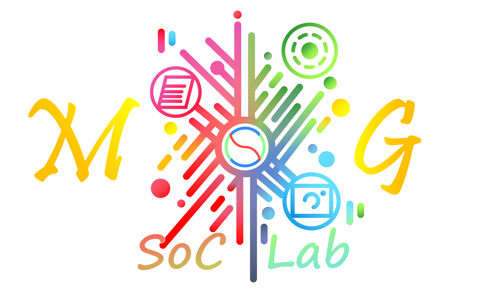

MENU
繁體中文
English
Welcome, Guest!
Log out
►
Lab
SoC Lab
AIoT Lab
EMCA Lab
Badass
►
SoC Lab
Prof. 蛋頭博士
余十三
小南瓜
徐丞丞
心碎小狗
應葛格
敦敦
梵楓霖
橋牌社長
湖口砲兵連連長
焦糖o彤兒
珊珊姊
色彩學大師
諸葛小劉
陳大帥帥
馬華
黃老二
►
AIoT Lab
Rocky
小瓜
慈慈
求萌 & 首蒙元
牛仔褲寶貝
老人與狗
阿詠
►
EMCA Lab
海神巨獸
金門王
►
Badass
憑拳大將軍
懶惰小依 & 賴床小依
渟渟急轉彎
王依渟
紀崴
蒂娜
►
Algorithm
►
Hand Based
Artificial Intelligence
Demosaicing
Eye Corner Detection
Histogram Equalization
Iris Matching
Phase Search
►
Paper Based
Auto White Balance
Digital IC Design
Firework Algorithm
Halftone
Lossy Compression
Tone Reproduction
►
Rule Based
Big Data Analysis
Fuzzy Control
Motion Estimation & Compensation
NAS Database
Noise Filter
Parallel Computing
►
Action
All-nighter
Analyze
Anticipate
Assign
Defer
Dump
Falsify
Forced Publish
Let's ball
Paper Storm
Plagiarize
Retract
Seminar
Side Quest
Start Over
►
Appendix
Rock
深淵
球球
穢土轉生研究生